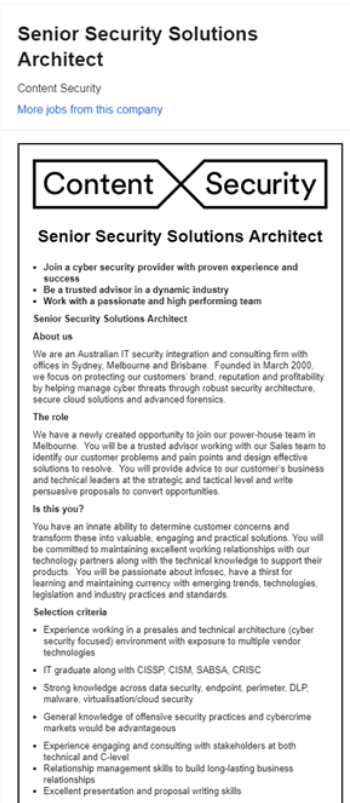

Rhys Burns – Senior Network Engineer, Data Centre:
Industry Data
Senior Network Engineers are the people who are heavily involved in the
efficiency at which a network runs within an organisation. They work closely
with other teams within the organisation to ensure that the network is secure
and efficiently. They also ensure that junior network engineers and support
technicians are allocated tasks they can complete, whilst also mentoring and
training them. Senior network engineers can also be known as computer network
architects.
The skills required for this profession are:
-
Advanced network engineering skills to manage and maintain enterprise level
infrastructure
-
People management skills, such as delegating duties, arrange training for staff,
manage conflicts, deal with project management
-
Time management skills to ensure problems are resolved quickly
-
Resource management making sure resources are allocated correctly, adding new
resources as required.
-
Investigate and implement new technologies and networks.
The 3 IT skills required that I don’t have are:
-
University degree required in order to secure roles at large companies
-
Industry qualifications such as CCNA, CCNP, other vendor specific qualifications
-
Work experience in network engineering, data centre engineering, cloud computing
The 3 non-related it skills I don’t have are:
-
Building Effective Relationships
-
Presentation Skills
-
Creativity
The demand of people who have the above skills set are still in high demand,
with the way that technology is moving these skills will be required for a long
time. People with these advanced skill sets will always be required, if there
are networks that require security and junior engineers that require advanced
training.
Having looked at the Burning Glass Data it doesn’t change my idea of an ideal
job as I had already made plans on how to achieve my goal and had considered
most if not all of the points made by Burning glass about skills required.
Tuan Luong - Desktop Support/Helpdesk
For my ideal job it would be in the
desktop support/help desk
or technical support roles because I enjoy the engagement and interaction with
customers with the joy of helping others from my time in
health care
studies.
The technical skills required are:
l
Ability to diagnose and repair computer hardware
l
Ability to install and diagnose software issues
l
Ability to train other users to the network
l
To work with other IT professionals, like network
engineers, IT department head, outside suppliers and repairs if equipment
The general skills required for desktop support which
are:
l
Inter personnel communications
l
Time management
l
Ability to train others, ie put complex ideas into a
simpler easy to follow format
l
Write reports as necessary
l
Ability to work with other
l
Group work and individual work.
The three IT skills I don’t have are:
l
The software products that the employers use and
generalized software experience
l
Knowledge of the different hardware configurations of
the many types of desktops the companies uses and their hardware peripherals.
l
Knowledge of scripting PowerShell
To develop these skills, I will continue to
develop my knowledge and skillset across various platforms during my studies in
the bachelor of IT and keep exploring and experimenting across different
platforms, programs and languages in order to develop a diverse knowledge of
software and systems.
Industry Data
According to my role of
technical/desktop support the skills that are in demand according to the burning
glass data.
The burning glass data shows
that the IT skills of technical support and customer service are high in demand
now with 1830 openings for technical support and 1411 openings for customer
service.
The technical support role ranks
11th in demand according to burning glass data. The three top IT skills that are
not in my required skill set is Java, JavaScript and SQL.
The role of system administrator which
involves similar tasks in technical support and customer service has around 681
openings according to the burning glass data with it being eighth highest
position in demand in the top IT job titles.
This shows as more IT systems
grow and develop, there will be a need for more IT technical support people to
maintain IT systems and infrastructure. Lastly the generic skills required
for my ideal job which includes effective communication and problem-solving
skills are the second two highest skills in the burning glass data which are
important to develop throughout my IT degree and career. By looking at the
burning glass data, it hasn’t changed my opinion of my ideal job because
technical support will be and still be in demand as IT systems grow and develop.
Even though the skillset is not much in demand, compared to higher positions
such as network engineers and database analysts, they are still valued by many
employers in the industry. The most important thing right now is to develop
important IT skills and soft skills which are valued across by many employers
strongly no matter what industry you work in.
Description:
l
Provide technical
support
l
Installation
report
l
Case
management.
l
Customer product
training.
l
Multinational
company
l
The position
requires you to deal with many different people.
l
Chance to work
with a company that cares about the water cycle and the environment.
l
Post secondary in
IT – I think a degree in IT would be a good start.
l
Minimum 2-3 years
in an IT role that includes customer support and application support.
l
Experience in
installing software -enterprise software.
l
Experience with
technical projects
l
Finish Bachelor
of IT through open universities.
l
Aquarius software
is used for the water industry.
l
Learn Aquarius
software, the company runs paid courses on their software.
l
Spend time online
studying the companies archives which are available.
l
Do further
courses via open universities in programming, web programming.
l
Off to work for a
day a week as a volunteer to gain experience.
Industry Data
The job title is Technical Specialist, and while there is
no specific title in the Burning Glass data, the closest would be a system
engineer or solutions architect which are both very highly sort after skills in
the IT industry. I field aiming for this type of role and bringing my skills up
to that level would place my skills in very high demand amongst employers.
The Job description for this position is to organize the
company’s technology use. This means advising on what sort of programs to
use and why, any training required, and all other technology to ensure the
companies technology are streamline, efficient and also able to be change or
expanded in the future.
Skill set required for this position
l
Investigate, monitor and make recommendations for all
IT problems or complainants
l
Provide analytical support
l
Develop and deliver realistic solutions to optimize
the IT use of the company
l
Direct the planning, design and modification of
individual project production
The It skills required are:
l
Ability to install and diagnose multiple hardware and
software issues
l
Advanced understanding of products,
l
Ability to make complex ideas more simple
l
Technical project management skills
The IT skills required by this company are in very
high demand by employers. The IT abilities of a technical specialist are
of great value by many IT companies. The skills required rank as high or
higher than network administrators or other IT professions.
The generalized skills are things like:
l
Good communication, both verbal and in writing
l
Ability to be a team member
l
Ability to provide presentation and training as
required
l
People management skill
l
Time management
l
Project management
l
Ability to talk to and work with other It professional
l
Project management
These skills are in very high demand and in fact are the
most demand skills in the industry.
The three highest skills required that I don’t have are:
l
Advanced understanding of the company software
products
l
Advanced understanding of the companies hardware setup
or design
l
Knowledge of current technologies
The three highest generalized skills I don’t have are:
l
Good written and verbal communication
l
Ability to deal with team-work - Ha!
l
Project management
The data from Burning glass has affected my opinion and
decision of what my ideal job is but in a good way. I realize that my ideal job
at first at least needs to be more realistic. I can aspire to get to the
level of Technical specialist but starting out maybe jobs that are within range
of me being able to achieve at least mid term. I think I would get
frustrated and disheartened trying to aim for a technical specialist job in the
short term.
Jayden Barber - Lead Game Designer
Position Description
for Lead Game Designer
(https://www.seek.com.au/job/39413513?type=standard&searchrequesttoken=8ce85d60-67a7-4e30-bc33-7a4419043ef6)
This position is one of leadership so
it would be my job to inspire, help and direct my team to create a
groundbreaking experience for the player. This position requires and Ideas man
as well as someone who is versed in communication, be it to the people I work
for, I works with or stakeholders in the company. The success of the product
ultimately falls to me as the head of the team which requires me to
conceptualize, develop and release an aspect of the product to make in
memorable.
This position is appealing to me on a
creative level. Innovation is something that I strive for in most areas of life.
Problem solving would also be a major factor in a job like this which appeals to
the puzzle loving part of my brain. Even now as a hobby I try to create game
concepts and think of ways that it would work or even fail. I also enjoy
leading, teaching people, and seeing people succeed and being the conduit for
that.
Skill Description
Over 6 years of experience in the
industry, with time spent developing AAA titles as a leader for at least one of
these titles. This gives precedent to you being a mentor, showing that you treat
the people below you with enough respect to create a successful project. Must be
able to thrive in a dynamic environment, able to overcome obstacles in a fast,
reactive way while leading others through solutions also.
Be creative with game concepts and
mechanics to create an interesting and groundbreaking addition to the product
for a memorable experience for the user/player. Experience in areas like Unreal,
vehicular combat and ability to communicate and lead groups across time zones
are also desired.
My Skills
Unfortunately, I’m lacking in the
technical skills department. I have yet to undergo any formal training in the
world of IT and that’s the main reason I enrolled in this course. I do however
have experience in leading a team. Back when I played tennis I was the captain
of a three man team in which I had to organize who played on certain days, match
up skill levels of the player and provide encouragement to my teammates. I also
taught kids, teens and young adults tennis which provided me with plenty of
patience and made me a more understanding, approachable and tolerant leader.
As I said I am undertaking this course
in order to learn the necessary skills for a job in this field, I am also
reading leadership books, and watching a lot of informative seminars online to
learn outside of my studies.
Industry Data
The job title for this role is Lead Game Designer
The job description is to design game play,
desiging the rules of a game. A lead game designer coordinated the work of
other designers, ebsues group and team communication and cohesion. The
equivalent Burning Glass data title might be software developer.
The skills required are:
l
Ability to design games
l
Ability to use different programming languages
l
Ability to be a team leader
l
Good written and verbal communication
l
Project management
l
Team management
l
Ability to make and implement design decisions
The IT skills required are:
l
Knowledge or programming languages like pearl c# c+
and others
l
Knowledge of testing software
l
Ability to diagnose and solve software errors, issues
and problems
The IT skills required by this job are in high demand
amongst certain employers. If the companies are into game design and
distribution then these skills are very highly valued. In non-game
companies, these skills are not as much valued unless the person is able to
translate their game design skills to other areas.
l
Team management
l
Excellent written and verbal communication
l
People management skills
l
Time management
l
Good presentation skills
l
Project management
The general skills required by companies for this
[position are in high demand for most companies whether they are game design
companies or other companies.
The three highest IT skills required that I don't have
are:
l
Programming language knowledge
l
Generalized IT skills, such as understanding of
networks databases and so on
l
Propriety software knowledge
The three highest generalised skills I don't have are:
l
Project management
l
Good presentation and implementation skills
The looking glass data did not change my mind about my
ideal job as I started this course with the hope of at least starting to learn
these skills.
I realise I have a long way to go, but by doing this
course and also looking into what else I can do to help prepare me for this type
of job I think I have a good chance of ending up after doing more junior
position in this type of role.
My group members ideal jobs can be relatable to my own.
Tuan and Mel’s job as support roles would relate to
security architect as the way towards that role generally would require around
5-10 years experience and I can see myself doing a support role in a SOC
(security operations centre) to gain experience. The similarities would reside
in the need for providing customer support and possible technical advice.
With Rhys’ ideal job as a senior network engineer, it is
very, very relatable as to be successful in a cybersecurity career, I would be
required to have a very good understanding in networking, all the different
protocols and really, how the internet works.
Jayden’s ideal job as a lead game designer may be a
different field of IT to cybersecurity but the requirements of the job such as
leadership skills and being able to think outside the box are similar traits
needed to be a security architect.
While our jobs are different in the type of
work you do and the knowledge that is required, there are still similarities of
certain skillsets needed for the jobs.
Burning Glass Data
The job title found in the burning
glass data which resembles my ideal job best would be the solutions architect.
In terms of demand from employers, it tops the list at 987, a good 100 more than
the next highest in demand, graphic designer.
When it comes down to required
IT-specific skill sets for a Cyber
solutions specialist, I would be required to have a good understanding of
vendor-specific software, so items such as Microsoft Windows, Oracle, Python and
LINUX would be key to having a successful career. I would also need a good
relationship building skills for interactions with stakeholders and idea
proposals.
As for required general skills, I
would need strong communication skills, problem-solving skills,
organizational
skills, writing skills, teamwork/collaboration skills, troubleshooting skills,
creativity and leadership skills. These skills will be required as it is a
fairly high-ranked job, you will be dealing with clients, providing them with
solutions and advice on security.
The three top-ranked IT-specific skill
sets not listed in my required skill set are SQL, Javascript and JAVA.
The three top-ranked general skill
sets not listed in my required skill sets are planning, detail-orientated and
research. While these skills can be a requirement, I chose to filter at least a
few out as the first six skills I identified as important for the job.
After
analyzing
the burning glass data in relation to my ideal job, my opinion has not changed.
It pretty much covers the skills required that I was expecting. I know that it
is a high-level job and my original goals still stand in regard to working
towards it. What did surprise me though, is the demand if the job. Seeing such
high demand has increased my motivation, even more, to live up to the dream.

Industry Data
Cybersecurity architect job description is to design,
build and oversea the implementation of network and computer security for a
company
Skills required are:
l
Advanced knowledge of data security across networks
and computers
l
Cybersecurity certification - CISSP (Certified
Information Systems Security Professional
l
CISM (Certified Information Security Manager)
certification
l
SABDS (Sherwood Applied Business Security
Architecture) certificate
l
CRISC (Certified in Risk and Information Systems
Control) certificate
l
Experience working with presales and technical
architecture software.
l
Knowledge of data security, endpoint, perimeter and
DLP technologies
l
Good verbal and written communication skills
l
Have good team working skills
l
Ability to interact with a variety of other
professional, IT and non IT
l
Good training and presentation skills
l
Provide advice to our customers and us on the latest
and achievable security.
The IT specific skill required of this
position are in very high demand by employers. Data security is becoming
an increasing hot topic and cause for concern. With many instances of
hacking and taking down of site by persons such as Anonymous lead to a great
risk for companies. The IT specific skills are probably in the highest
demand, especially in companies that specialize in this field.
The general skills required by this type of job are in
demand very highly in all companies, non IT and IT.
The three highest IT skills I don’t have are:
l
Cybersecurity certification
l
Knowledge of data security, database management
l
Knowledge of other related Cybersecurity certification
like CRISC
The three highest general skills required by
this type of job that I don’t have are
l
Ability to give technical presentations
l
Working with a variety of personnel
l
Good verbal and written skills
Having looked at the burning class data. It does not
change my opinion of my ideal job. This is due to the fact I am already
taking steps to start to meet these requirements. I am studying the Bachelor of
IT and studying a certificate in Cybersecurity. I feel that this type of
position is entirely achievable, and I am determined to get there.
Teams Jobs Rank According to Demand of
skills.
1 - Cyber Security Architect - Daniel Lay Ideal Job
The job title found in the burning glass data which
resembles my ideal job best would be the solutions architect. In terms of demand
from employers, it tops the list at 987, a good 100 more than the next highest
in demand, graphic designer.
2 - Lead Game Designer - Jayden Barber
In the Burning Glass data there is no ranking for Lead
Game Designer or Game Designer of any kind, however Graphic Design in placer
high up on the list of in demand jobs, 2nd to be exact with a score of 887.
Although very different fields of work there are many transferable skills
between the two.
3 - Desktop Support - Tuan Luong’s Ideal job
Desktop support technicians diagnose,
repair and provide support to IT services within businesses. The burning glass
data didn’t look specifically at desktop support being in demand, however there
is a similar role which is the service desk analyst which ranks at 779 in the
burning glass data.
Senior Network Engineers are on the lower end in terms
of demand with a score of 336 according to the burning glass data provided in
the assignment rubric. Likely due to its low demand, the IT skills needed by a
Senior Network Engineer are mid-range in demand also. Having skills in
Unix/Linux and coding in Python are quite low on the list with a score of 1632
and 1150 respectively. However being in a leadership role requires some of the
most sort after Generic skills such as Communication (44367), organizational
skills (15844), collaboration (14364) and many other in demand skills.
4 - Senior Network Engineer, Data Centre - Rhys Burns
Ideal Job
The main IT skills that are ranked on the Burning
Glass data that are required for this job is project management and technical
support. These rank 5th with a score of 2252 and 11th with a score of 1830
respectively. This means that this field requires skill sets in high demand.
5 - Technical Specialist - Mel Eder’s Ideal Job
The common elements between our ideal jobs are the nature
of the IT field requires a high degree of soft skills as well as technical
skills as well. The majority of the soft skills that are required for our ideal
jobs is the ability to communicate effectively across different platforms, work
effectively as a team and most importantly troubleshoot and problem solve which
is the fundamental skills in IT because there is not one answer to a single
problem. The technical skills which are common between our ideal jobs is a high
degree of knowledge and competency across different IT platforms including
programming languages, software and hardware systems such as networks and
servers. One of the most important things right here and right now is to keep
developing these soft skills and technical skills throughout the course of IT
and career to stay competitive in the workforce.